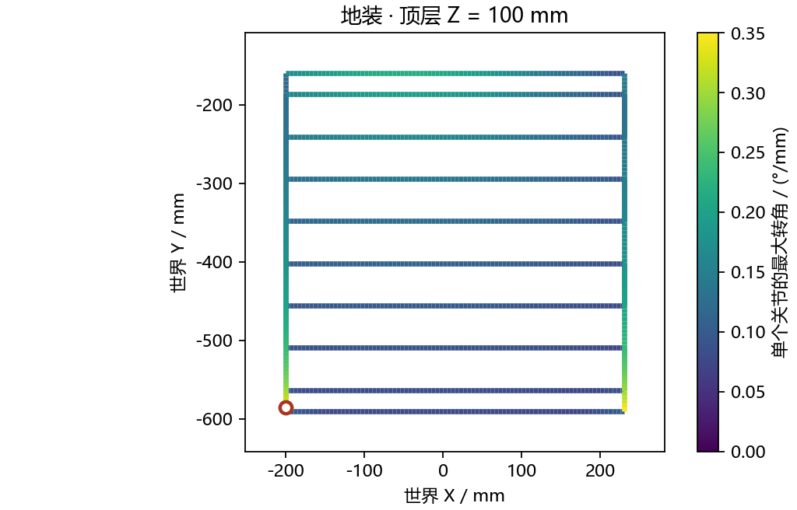

UR7e 安装位置的首轮搜索
这里的轨迹从工件起印角开始。后续实验加入了从指定起姿到起印角的运动，以及腕部与喷头之间的碰撞检查。原 430 mm 地装方案的腕部与喷头组件在底层发生干涉。查看失效位置和通过复核的三个地装布局。
要求至少 300 mm 高时，各安装能放下多大的方件？
按本次搜索使用的机械臂与喷头模型，共有 22 个布局通过五层轮廓、三层填充和喷头筛查。下表取每种安装中符合高度要求的最大边长。同边长时先比工件高度，再比喷头与支架的间隙。H 以基座安装中心为零。点击回放可查看这组模型算出的关节轨迹。
| 安装 | 方形边长 × 工件高度 | 底面面积 | 底面 H | 中心 (X, Y) | 最大关节转角 / mm | 奇异性下界 | 站内活动 TCP 复核 | 轨迹 |
|---|---|---|---|---|---|---|---|---|
| 地装 | 430 × 400 mm | 0.1849 m² | -300 mm | (15, -375) | 0.350° | 0.183 | 整条刀路 4,357 / 4,357 点逆解通过 | 回放已算路径 |
| 侧装 | 370 × 380 mm | 0.1369 m² | -650 mm | (175, 525) | 0.494° | 0.084 | 抽查 7 / 9 点逆解通过 | 回放已算路径 |
| 吊装 | 350 × 300 mm | 0.1225 m² | -650 mm | (5, -325) | 0.312° | 0.230 | 抽查 10 / 10 点逆解通过 | 回放已算路径 |
最大关节转角表示喷嘴每走 1 mm 时转动最多的单轴。奇异性下界越大，沿已查路径留给关节运动的余量越大，本次门槛为 0.02。排名受候选范围、预算、安装工装和刀路影响。
围绕两个地装喷头干涉位置又测试了 48 个邻近方案，其中 9 个通过最终检查。补充搜索与首次干涉位置
地装实例 430 mm 方件高 400 mm，底面 -300 mm。在中心 (15, -335) mm，机械臂连杆通过检查，喷头包围盒却碰到安装板。把中心移到 (15, -375) mm，喷头与支架的采样间隙下界为 21.08 mm。同一条路径上，喷头包围盒到已打印体的下界约 0.74 mm。喷头模型尖端与历史工具中心的配准残差为 1.49 mm，实际尖端净空仍需测量。
同尺寸对照也会改变选择。对于 500 × 500 × 150 mm 工件，各安装分别选位置后，名义刀路的最小峰值关节转角为地装 0.341°/mm、侧装 0.249°/mm。
比较面积、高度与关节运动之间的取舍（15 个非支配候选）
下面的候选各有取舍。不能同时获得更大的底面、更高的工件、更小的峰值和六轴累计转角，以及更大的奇异性余量。
| 安装 | 方形边长 × 工件高度 | 底面面积 | 底面 H | 中心 (X, Y) | 最大关节转角 / mm | 奇异性下界 | 轨迹 |
|---|---|---|---|---|---|---|---|
| 侧装 | 500 × 150 mm | 0.2500 m² | -650 mm | (400, -110) | 0.249° | 0.156 | 查看摆放 |
| 地装 | 430 × 400 mm | 0.1849 m² | -300 mm | (15, -375) | 0.350° | 0.183 | 回放已算路径 |
| 地装 | 430 × 400 mm | 0.1849 m² | -300 mm | (15, -355) | 0.306° | 0.210 | 查看摆放 |
| 地装 | 410 × 400 mm | 0.1681 m² | -300 mm | (15, -355) | 0.286° | 0.226 | 查看摆放 |
| 地装 | 390 × 400 mm | 0.1521 m² | -300 mm | (15, -355) | 0.271° | 0.240 | 查看摆放 |
| 地装 | 370 × 400 mm | 0.1369 m² | -300 mm | (15, -355) | 0.258° | 0.254 | 查看摆放 |
| 侧装 | 370 × 380 mm | 0.1369 m² | -650 mm | (175, 525) | 0.494° | 0.084 | 回放已算路径 |
| 侧装 | 350 × 400 mm | 0.1225 m² | -650 mm | (175, 495) | 0.353° | 0.170 | 查看摆放 |
| 吊装 | 240 × 400 mm | 0.0576 m² | -650 mm | (130, 680) | 0.298° | 0.278 | 查看摆放 |
| 吊装 | 200 × 400 mm | 0.0400 m² | -650 mm | (130, 650) | 0.235° | 0.373 | 查看摆放 |
| 地装 | 160 × 400 mm | 0.0256 m² | -100 mm | (10, -370) | 0.196° | 0.450 | 查看摆放 |
| 吊装 | 160 × 150 mm | 0.0256 m² | -650 mm | (420, 0) | 0.173° | 0.217 | 查看摆放 |
| 侧装 | 160 × 150 mm | 0.0256 m² | -300 mm | (170, -350) | 0.191° | 0.484 | 查看摆放 |
| 地装 | 140 × 400 mm | 0.0196 m² | -100 mm | (450, 0) | 0.180° | 0.240 | 查看摆放 |
| 侧装 | 140 × 150 mm | 0.0196 m² | +150 mm | (450, 0) | 0.162° | 0.287 | 查看摆放 |
地装整条刀路，用站内活动喷头重新求解
从首点建立构型，后面每一点都以上一点的关节角为初值。全长 21.739 m，4,357 / 4,357 个节点通过逆解回代，其中 4,357 个保持首点构型。相邻节点的最大单轴转角为 2.08°，离关节限位至少 16.01°，全程 J6 的角度范围为 0.313°。
在 4,356 段的端点和四分位处，用 RoboDK 正解检查了 17,425 个位置。相对目标直线，最大位置误差为 0.0335 mm，最大姿态误差为 0.000023°。同一关节序列驱动本地七段 CAD 模型检查 8,717 帧，发现接触的帧数分别为本体 0 帧、支架及台面 0 帧、已打印体 0 帧，未能判定的帧数为 0。
把相同关节角交给本地名义模型后，喷嘴位置与 RoboDK 最多相差 2.48 mm，4,356 / 4,356 段未达到 0.5 mm 的绝对跟踪要求。三维工作台回放搜索留存的名义轨迹，两套工具的 RoboDK 关节序列均已单独保存。实际喷头与软管的净空仍待校准。两套工具的逐点关节角、误差和碰撞记录
同一个喷嘴目标，换成 RoboDK 当前工具会怎样？
在同一个仿真站抽查 8 个布局、122 个路径点。实验保存的工具中心点与站内当前工具的法兰偏移相差 56.56 mm。两次都让喷嘴到同一世界坐标，以该点的归档关节角为逆解初值。容差为 0.1 mm 和 0.01°。
| 原生 RoboDK 求解使用的工具 | 通过回代 | 合格解中自碰点数 | 相对实验关节角的最大单轴修正 |
|---|---|---|---|
| 本次搜索使用的历史 TCP | 122 / 122 | 0 | 0.85° |
| 站内活动 TCP | 120 / 122 | 1 | 26.39° |
换用站内活动 TCP 后，侧装边长 370 mm、高 380 mm 有 2 个目标的逆解未通过回代，地装边长 500 mm、高 150 mm 有 1 个原生关节解自碰。
地装顶层反例，中心 (11, 461) mm，底面 -650 mm，方件 500 × 500 × 300 mm。网页和 RoboDK 都在第 46 帧测得前臂与名义立柱分离，第 47 帧测得接触。将同一根柱子平移 1,500 mm 后接触消失。
逐点逆解、接触对象和仿真站恢复记录看地装顶层，哪一段牵动关节最多？

走完整个顶层时，J1 的角度范围为 74.8°，J3 为 90.6°，腕部末轴 J6 为 0.0004°。软管会随整条手臂摆动，单看 J6 会漏掉这部分运动。
回放使用选中的连续关节分支。换起点构型、走线方向或工具，转角分布会随之改变。需要比较整片区域时，可查看已有的三方向短线实验。在同一点尝试沿 X、Y、Z 各走 10 mm，记录同一起始分支能做到的最小峰值转角。各高度的局部关节运动图
从初筛到填充，哪些位置被淘汰？
| 首轮验证内容 | 测试布局数 | 路径与连杆通过 |
|---|---|---|
| 底层与顶层，含两轮邻域搜索 | 859 | 277 |
| 五层轮廓与层间连接 | 30 | 27 |
| 五层轮廓与三层往返填充 | 15 | 15 |
初始 144 组尺寸和高度组合中，有 41 组在初筛网格上找不到中心。最终五层轮廓连成一条路径，底、中、顶层分别沿 X、Y、X 做往返填充。填充约每 55 mm 一道。
首轮进入喷头检查的 15 个方案中，有 13 个的喷头包围盒与名义工装、已打印体分离。
查看首轮淘汰原因与喷头碰撞位置
连杆与台面或支架碰撞 115 个，连杆与已打印工件碰撞 32 个，机械臂自身碰撞 25 个，已查分支未获得完整的无碰撞见证 18 个，工件内有采样点无法竖直朝下到达 73 个，关节越限或余量不足 6 个，相邻节点的关节转角过大 11 个，整条路径找不到共用关节分支 89 个，奇异性下界未达阈值 4 个，工件或台面与安装支架重叠 177 个，部分刀路节点无逆解 32 个。
- 地装，边长 430 mm，底面 -300 mm。位置 [130.0, -120.0, -100.0] mm，涉及 cad_component_03 / mount_plate。
- 地装，边长 430 mm，底面 -350 mm。位置 [155.0, -120.0, -50.0] mm，涉及 cad_component_05 / mount_plate。
哪些碰撞查过，哪些还需要实测？
| 工装摆放 | 检查名义台面、台腿、成品外廓与安装板、立柱是否占据同一空间。 |
|---|---|
| 逐点逆解 | 最终按 XY 与 Z 各 2 mm 检查方形内部和边缘，要求喷嘴竖直朝下，滚转角为零。 |
| 连续关节运动 | 比较最多八种逆解分支，整条刀路沿同一分支走。检查关节限位、相邻转角、段内跟踪误差和奇异性下界。 |
| 机械臂碰撞 | 用七段机械臂 CAD 网格查十五对非相邻连杆、台面、支架和当前高度的已打印体。精查的碰撞采样间隔最多 2.5 mm 或 2°，两项同时约束。 |
| 喷头和管线 | 用喷头 STEP 拆出的十五个包围盒查安装板、支柱、台面与已打印体，喷嘴端与喷头主体分别记间隙。真实安装偏置、软管固定点与余长仍待测量。 |
| RoboDK 见证 | 在已打开的仿真站抽查同一组关节角、原生逆解和连杆自碰。站内工具与本次计算的历史工具变换分别记录。 |
这里的五层轮廓和三层填充是代表性刀路。完整切片、从机器当前关节到首点的进场段、逐段速度与加速度、软管绕柱、喷头自身与机械臂的干涉，均需另查。采样间的碰撞和现场尺寸误差也会改变结论。RoboDK 的原生碰撞检查同样取决于站内几何、启用的碰撞对和采样步长。RoboDK 碰撞检测说明